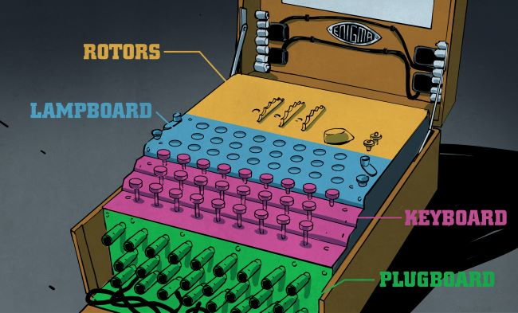
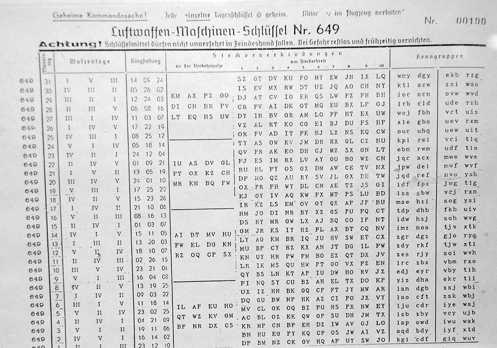

Merhabalar bu yazımda tarihte şifreleme konusunda çok önemli bir yeri olan, Alan Turing'in bile şifrelerini çözmek için uğraştığı, hakkında belgeseller ve filmlerin çekildiği Enigma adlı makineden bahsedeceğim.
Aşağıdaki konu başlıklarına tıklayarak o konuyu anlattığım kısıma geçebilirsiniz.
Enigma'nın Tarihi ve Yapısı
Enigma bir yazıyı şifreleme ve kendi tarafından yazılmış şifreleri doğru ayarda çalıştırılıdığı zaman çözmeye yarayan bir şifreleme makinesidir. Enigma ilk olarak 1. Dünya Savaşı sonunda Arthur Scherbius tarafından Almanya'da üretilmiştir. İlk çıktığı zamanlarda genellikle özel sektörde bilgileri güvenli bir şekilde iletmek için kullanılmıştır. İlk üretimlerinde sadece rotor içeren 3 veya 4 rotorlu versiyonları üretilmiştir.
İlerleyen zamanlarda 2. Dünya Savaşının çıkmasıyla birlikte Alman ordusu Enigmayı ordu içindeki gizli mesajlaşmalar için kullanmaya karar verdiler. Sadece rotorlu olan Enigma versiyonunu daha da güvenli yapmak için Enigmanın alt kısmına harflerin şifrelenmesini değiştirmek için her harf için bir tane olacak şekilde 26 soketlik bir parça eklediler. Bu sayede şifreleri çözmek daha da zorlaştı. Bu yüzden 2. Dünya Savaşı sırasında Amerika ve İngiltere ortak olarak alanında en iyi bilim insanları, matematikçileri ve mühendisleri toplayarak Enigma'nın şifrelerini kıracak bir sistem geliştirmeye çalıştılar. Bu ekip başta Alan Turing ve Gordon Welchman yardımlarıyla yapılan "Bombe" adlı makineyi Enigma'nın günlük ayarını kısa sürede bulmak için kullandılar.
Enigma Nasıl Çalışır
Enigma'nın bir yazıyı şifrelemek veya şifrenlenmiş bir yazıyı çözmek için kullanım şekli aynıdır. Enigma'nın doğru bir şekilde çalışması için öncelikle yazıyı şifreleyen ve bu şifrelenmiş yazıyı çözmek isteyen kişinin makineyi aynı ayarlara getirmesi gerekiyor. Makineye doğru ayarlara getirdikten sonra şifrelemek istediğimiz metini giriyoruz ve o metinle aynı uzunlukta olan şifrelenmiş bir yazı elde ediliyor. Şifre çözmek istediğimizde ise elimizdeki şifreli yazıyı giriyoruz ve sonunda yazının orijinal hali elde ediliyor. Makinenin çalışma prensibi temel olarak bir harfi başka bir harfe çevirmektir. Yani şifrelenme kelimeye göre değil sadece harfe özel yapılır. Her harf ayarların durumuna göre farklı bir harfe dönüşür. Enigmanın çalışması 3 temel ayara bağlıdır.
Rotorların değeri
Rotorların sırası
Soketlerin bağlanma şekli
1-Rotorların Değeri:
Enigma genellikle 3 rotora sahiptir. Rotorların her birinin değeri vardır. Bu değerler 1 ve 26 arasındaki sayılardır. Bazen bu sayıların yerine A ile Z arasındaki harfler de kullanılabilir ama Alman alfabesi 26 harf olduğu için bu sistemde bir farklılık yaratmaz ben anlaması daha rahat olacağı için anlatırken sayı değerlerini kullanacağım. Örnek olarak rotorlarımızın değerini sırasıyla (5 12 24) olarak düşünelim .Enigma her değer girildiğinde en sağdaki rotorun değerini 1 arttıracaktır. Yani eğer makinede bir harf tuşlarsak değerler (5 12 25) olarak değişecektir ve bir harf daha tuşlarsak arabalardaki kilometre sayacına benzer şekilde değerlerimiz (5 13 0) olacaktır. Bu üç değere göre her zaman harflerin alacağı değer değişir. Eğer üç kere üst üste aynı harfi girersek bile şifrelenen 3 harf birbirinden farklı olacaktır. Bu şekilde 17,576 farklı şekilde değerler ayarlanabilir.

(Sayı yerine harf değeri kullanılmış bir rotor)
2-Rotorların Sırası:
Her rotor birbiriyle aynı değildir. Üç rotorun da iç yapısı farklıdır. I, II ve III tipinde üç çeşite rotor vardır. Bu rotorlar birbirleri arasında yer değiştirebilir. Yani örnek vermek gerekirse rotorları sırasıyla (I II III) ya da (II III I) şeklinde ayarlanabilir. Bu sayede rotorlar 6 farklı şekilde ayarlanabilir. Rotorların değerini ve sırasını kullandığımızda 105,456 farklı şekilde makineyi ayarlabiliyoruz. Aslında bu değeri gördüğümüzde şifrenin çözülmesi için gün içerisinde belirli bir topluluk her ayarı denese doğru ayarı bulma ihtimalleri çok düşük değilmiş gibi gözüküyor. Ama bir sonraki aşamada yapılacak ayar Enigma'nın karmaşıklığını büyük ölçüde arttıracak.
3-Soketlerin Bağlanması:

(Soketlerin olduğu kısım)
Enigma da yukarıdaki resimde gördüğünüz gibi 26 tane soket vardır. Resimde A harfi J ile, S harfi O ile birbirine bağlanmıştır. Bu bağlanmaların sonucunda harflerin alacağı değer birbirlerinin değerleriyle değiştirilir. Yani resimdeki örneğe göre bakacak olursak eğer makineyi kullanan kişi A harfine basarsa J harfinin alacağı değeri almış olur. Aynı şekilde J ye basıldığında A nın değerini alınmış olur. Bu resimde sadece 2 tane çiftin olduğunu görüyoruz ama savaş zamanında Alman ordusu 10 tane çift kullanarak karmaşıklığı arttırıyor. En son olarak bütün değerler dahil edildiğinde makine 158,962,555,217,826,360,000 ≈ 2^67 farklı şekilde ayarlanabiliyor. Bu sayede ayarın deneme yanılma yöntemiyle bulunma ihtimali çok küçük bir değere düşüyor.
Gördüğünüz gibi Enigma aslında zamanına göre çok iyi bir şifreleme makinesi ama bu çok büyük sorunlarının olduğu gerçeğini değiştirmiyor. Enigma'nın en büyük sorunu iki tarafın da aynı ayarları ayarlayabilmesi. Ayarlar aylık liste olarak hangi gün hangi ayarı kullanacakları şeklinde ilgili makineyi kullanan departmanlara veriliyordu. Ama bu listenin bir ajanın eline geçmesi ya da başka bir durumla düşmanın eline geçmesi makineyi kullanan taraf için büyük bir sıkıntı ortaya çıkarıyordu. Bu yüzden listeyi güvenli bir şekilde ulaştırmak büyük bir masraf ve dikkat istiyordu.
(Gerçek bir ayar listesi)
Ama genel olarak baktığımızda Enigma gerek özel sektörde gerek askeri alanda zamanına göre önemli bir yer sahibidir. Eğer bu tarz konular ilginizi çekiyorsa Alan Turing ve Enigma dan bahseden "The Imitation Game" adlı filmi izlemenizi öneririm. Siz de Enigma'yı kullanmak istiyorsanız linkten enigmanın simülasyonunu deneyebilirsiniz.
Kaynakça: